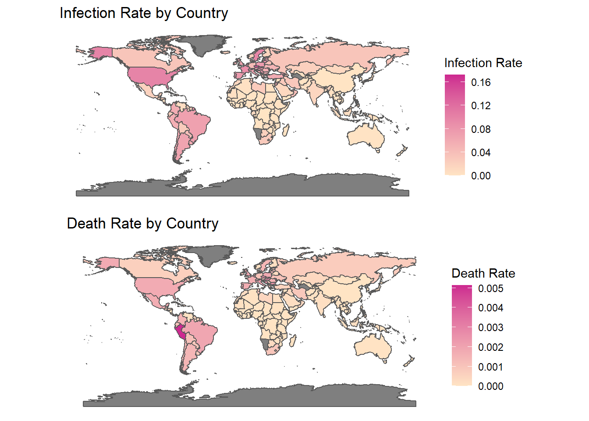
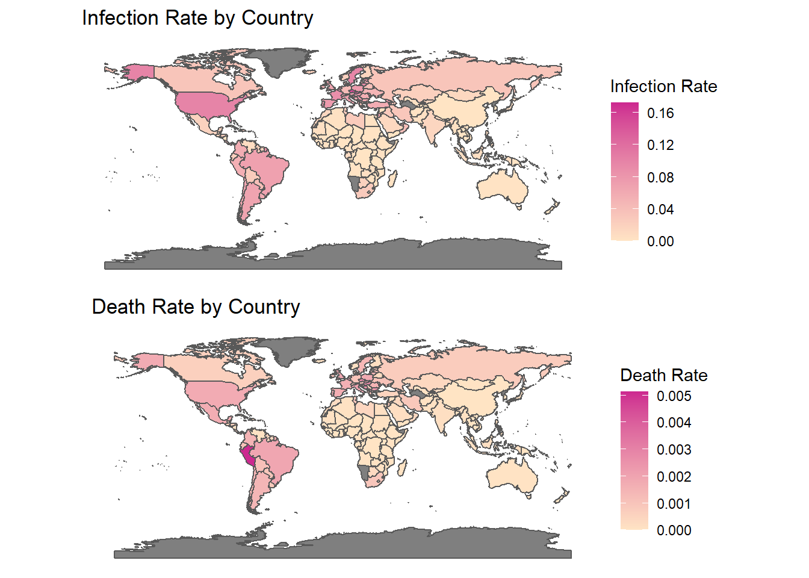
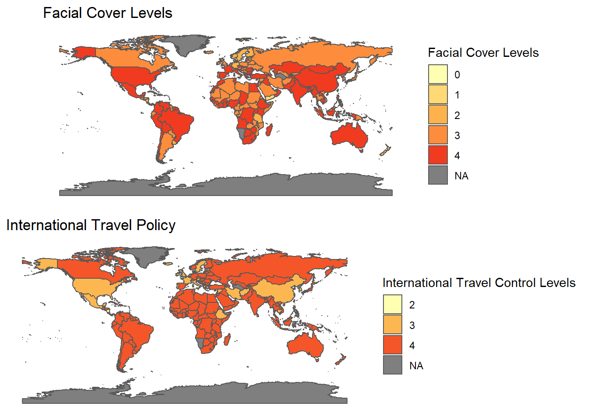
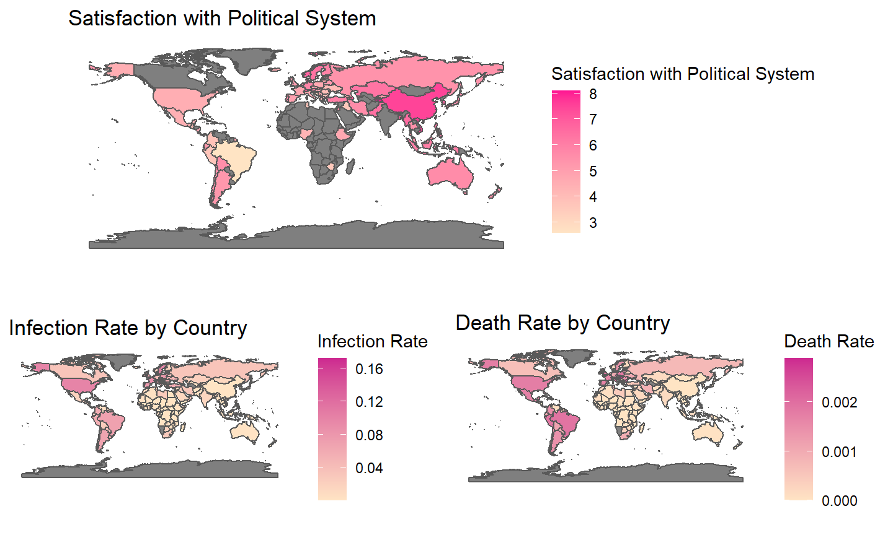
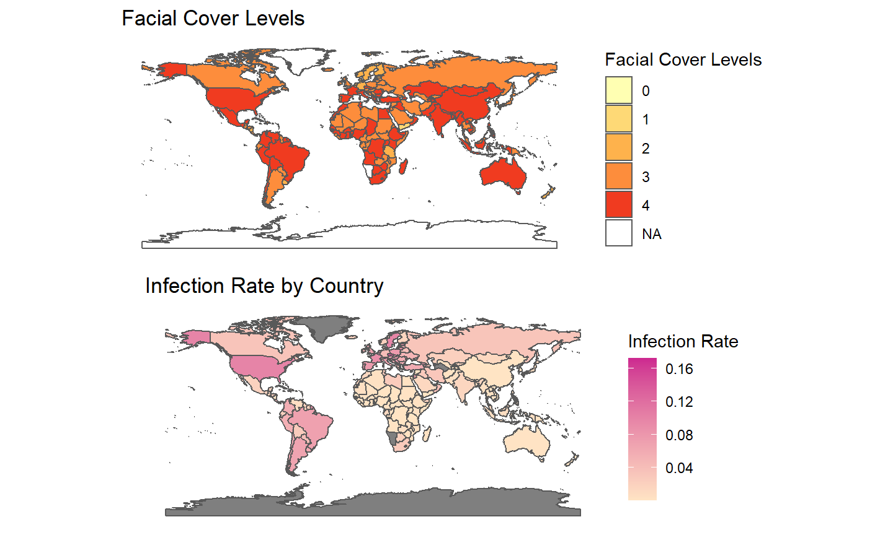
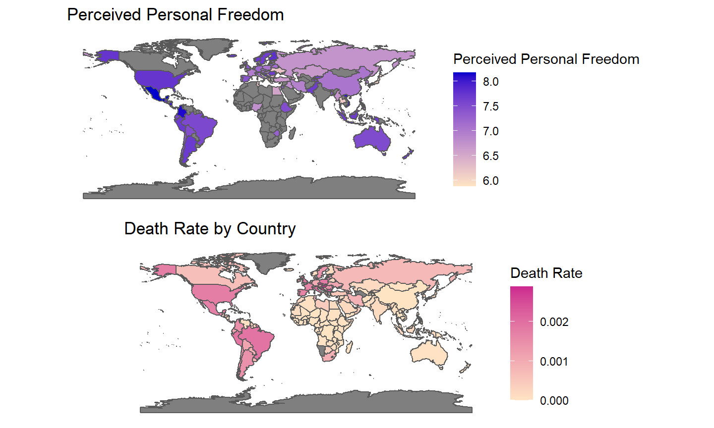

- One year into the global pandemic, the infection rate and death rate differ drastically between countries.

5/2/2021


What characteristics can make a country more effective at combating a pandemic?
In this study, we attempted to look at this question from four perspectives: physical/mental wellness, social/political development,personal independence, and government mitigation orders.
The data that we explored included: Cultural Orientation, World Values Survey, Gini Index, Health Investments, Oxford COVID-19 Government Response Tracker
H1a: Variables measuring greater (physical or mental) wellness will predict lower death rates.
H1b: Variables measuring greater (physical or mental) wellness will predict lower infection rates.
H2a: Variables measuring greater social/political development will predict lower death rates.
H2b: Variables measuring greater social/political development will predict lower infection rates.
H3a: Variables measuring greater personal independence will predict greater death rates.
H3b: Variables measuring greater personal independence will predict greater infection rates.
H4a: Variables measuring government mitigation orders will predict lower death rates.
H4b: Variables measuring government mitigation orders will predict lower infection rates.
We merged the datasets and used stepwise regressions to select the best model for each DV.
We decided to use variables suggested by the backward regressions for both DVs since the MSE of the backward regression was smaller for both DVs.
| Death Rate | |||
|---|---|---|---|
| Predictors | Estimates | CI | p |
| Intercept | 0.00 | -0.00 – 0.01 | 0.522 |
| Individualism | 0.00 | 0.00 – 0.00 | 0.018 |
| Uncertainty Avoidance | 0.00 | 0.00 – 0.00 | 0.023 |
| Freedom | 0.00 | 0.00 – 0.00 | 0.015 |
| Political System Satisfaction | -0.00 | -0.00 – -0.00 | 0.002 |
| Health | -0.00 | -0.00 – 0.00 | 0.075 |
| Total Border Closure | -0.00 | -0.00 – -0.00 | 0.015 |
| Observations | 39 | ||
| R2 / R2 adjusted | 0.692 / 0.634 | ||
| Infection Rate | |||
|---|---|---|---|
| Predictors | Estimates | CI | p |
| Intercept | -0.10 | -0.29 – 0.10 | 0.318 |
| Individualism | 0.00 | 0.00 – 0.00 | 0.005 |
| Masculinity | -0.00 | -0.00 – -0.00 | 0.002 |
| Uncertainty Avoidance | 0.00 | 0.00 – 0.00 | 0.006 |
| Freedom | 0.02 | -0.00 – 0.03 | 0.066 |
| Political System Satisfaction | -0.02 | -0.03 – -0.01 | 0.008 |
| Competitiveness | 0.01 | -0.01 – 0.02 | 0.211 |
| Government Confidence | 0.04 | -0.00 – 0.08 | 0.067 |
| Total Border Closure | -0.03 | -0.04 – -0.01 | 0.004 |
| Movement Restriction | 0.02 | -0.01 – 0.05 | 0.114 |
| Mask Level 4 | -0.02 | -0.03 – -0.00 | 0.049 |
| Mask Level 2 | -0.02 | -0.05 – 0.01 | 0.154 |
| Observations | 39 | ||
| R2 / R2 adjusted | 0.721 / 0.608 | ||
We started with a simple OLS linear regression model. To test for additional robustness due to the small sample size (only had full data for 39 countries), we then performed additional complex analyses:
H1a: Variables measuring greater (physical or mental) wellness will predict lower death rates.: Weakly Supported
H2a: Variables measuring greater social/political development will predict lower death rates.: Supported
H3a: Variables measuring greater personal independence will predict greater death rates.: Supported
H4a: Variables measuring government mitigation orders will predict lower death rates.: Supported
| Death Rate | |||
|---|---|---|---|
| Predictors | Estimates | CI | p |
| Intercept | 0.00 | -0.00 – 0.01 | 0.522 |
| Individualism | 0.00 | 0.00 – 0.00 | 0.018 |
| Uncertainty Avoidance | 0.00 | 0.00 – 0.00 | 0.023 |
| Freedom | 0.00 | 0.00 – 0.00 | 0.015 |
| Politial System Satisfaction | -0.00 | -0.00 – -0.00 | 0.002 |
| Health | -0.00 | -0.00 – 0.00 | 0.075 |
| Border Closure | -0.00 | -0.00 – -0.00 | 0.015 |
| Observations | 39 | ||
| R2 / R2 adjusted | 0.692 / 0.634 | ||
H1b: Variables measuring greater (physical or mental) wellness will predict lower case rates.: Weakly Supported
H2b: Variables measuring greater social/political development will predict lower case rates.: Supported
H3b: Variables measuring greater personal independence will predict greater case rates.: Supported
H4b: Variables measuring government mitigation orders will predict lower case rates.: Supported
| Infection Rate | |||
|---|---|---|---|
| Predictors | Estimates | CI | p |
| Intercept | -0.10 | -0.29 – 0.10 | 0.318 |
| Individualism | 0.00 | 0.00 – 0.00 | 0.005 |
| Masculinity | -0.00 | -0.00 – -0.00 | 0.002 |
| Uncertainty Avoidance | 0.00 | 0.00 – 0.00 | 0.006 |
| Freedom | 0.02 | -0.00 – 0.03 | 0.066 |
| Political System Satisfaction | -0.02 | -0.03 – -0.01 | 0.008 |
| Competitiveness | 0.01 | -0.01 – 0.02 | 0.211 |
| Government Confidence | 0.04 | -0.00 – 0.08 | 0.067 |
| Border Closure | -0.03 | -0.04 – -0.01 | 0.004 |
| Movement Restriction | 0.02 | -0.01 – 0.05 | 0.114 |
| Masl Level 4 | -0.02 | -0.03 – -0.00 | 0.049 |
| Mask Level 2 | -0.02 | -0.05 – 0.01 | 0.154 |
| Observations | 39 | ||
| R2 / R2 adjusted | 0.721 / 0.608 | ||



Limitation: small sample size
International control level predicts lower death rates
International control level and internal control level predict lower infection rates
Greater personal independence predicts greater death rates and infection rates
Greater political system satisfaction predicts lower death rates and infection rates
Every team member attended meetings, found datasets, and brainstormed ideas. Shi Shi did the backward and forward regressions to select the variables. Bingling and Mason ran the OLS regressions, cross-validation LM regressions, and PLS and Jackknife tests. Yixuan made the beautiful maps. Last but not least, Jason made the slides for our presentation.